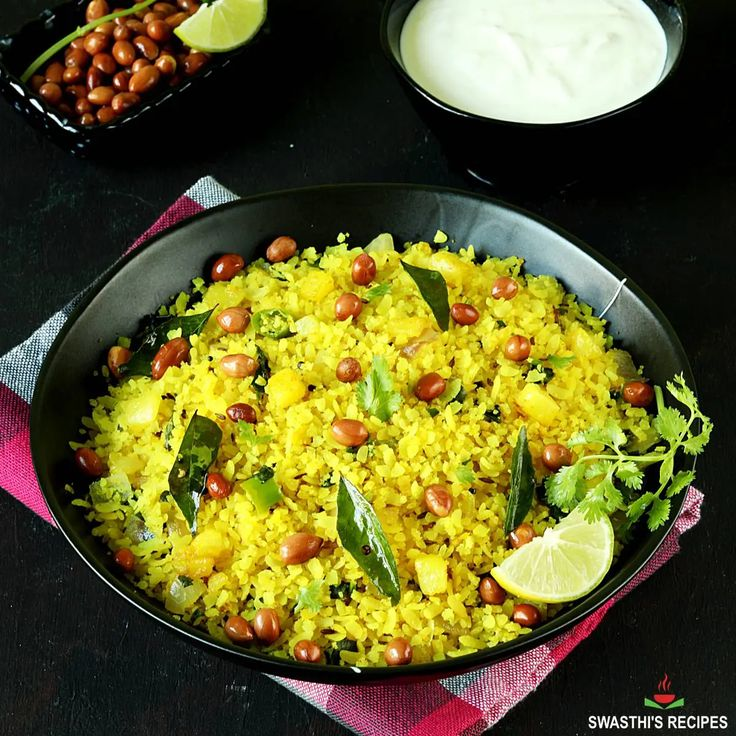

Poha Recipe
Poha is a light and healthy breakfast dish made from flattened rice (poha) and is very popular in India, especially in Maharashtra and Madhya Pradesh. Here's a simple recipe for a delicious poha:
Ingredients:
- 2 cups poha (flattened rice)
- 1 medium onion, finely chopped
- 1 medium potato, diced (optional)
- 2 green chilies, finely chopped
- 1 tsp mustard seeds
- 8-10 curry leaves
- 1/4 tsp turmeric powder
- 1/2 tsp sugar (optional)
- Salt to taste
- 2 tbsp oil
- 1/4 cup roasted peanuts (optional)
- 2 tbsp chopped coriander leaves
- 1 lemon, cut into wedges
- Fresh grated coconut for garnish (optional)
Instructions:
1. Prepare the Poha:
- Rinse poha in a colander under running water for a few seconds. Do not soak them; just rinse until they become soft.
- Set the poha aside to drain completely, and sprinkle a pinch of salt and sugar on it. Mix gently and keep aside.
2. Cook the Poha:
- Heat oil in a large pan or kadhai over medium heat.
- Add mustard seeds and let them splutter.
- Add curry leaves and green chilies. Sauté for a few seconds until fragrant.
- Add finely chopped onions and sauté until they turn translucent.
- If using potatoes, add them now and cook until they are tender and lightly browned.
- Add turmeric powder and stir for a few seconds to mix with the onions and potatoes.
- Add roasted peanuts (if using) and stir well.
3. Add Poha:
- Now, add the rinsed poha to the pan and gently toss everything together. Be careful not to mash the poha.
- Cook for 2-3 minutes on low heat, stirring occasionally to ensure the poha is evenly coated with the turmeric and spices.
- Adjust salt to taste.
4. Garnish and Serve:
- Turn off the heat and add chopped coriander leaves. Give it a gentle stir.
- Serve the poha hot, garnished with fresh grated coconut and lemon wedges on the side for squeezing over.